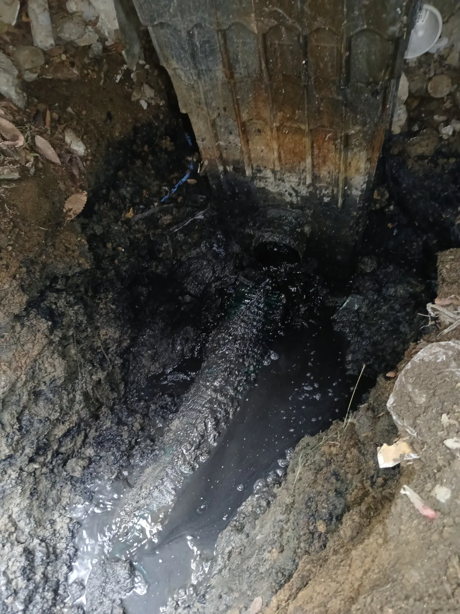
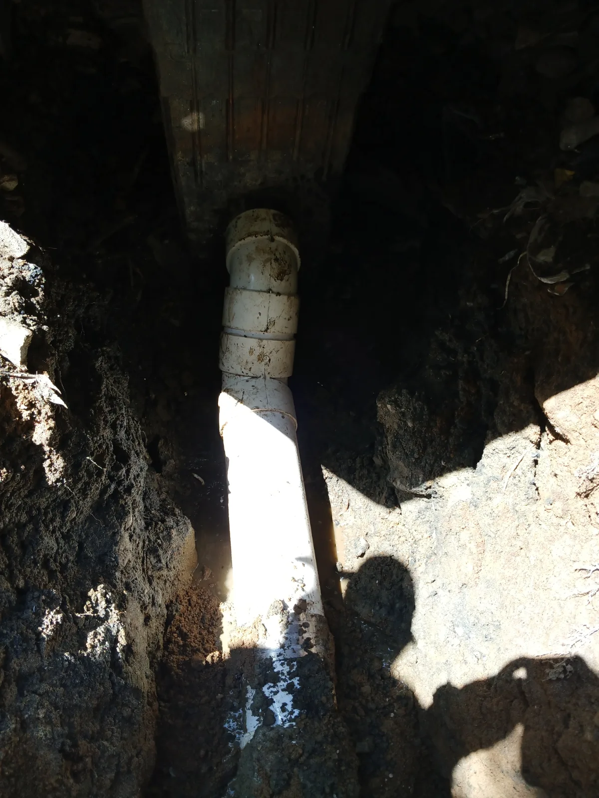

용산구 이촌동 배관공사, 현장 도착 후 진단
처음 현장을 방문했을 때 저희 신라건축설비는 용산구 이촌동의 한 아파트 메인 배관과 집수정 방향의 배수 상태부터 점검했습니다.
배관 내부에는 검은 오염물과 이물질이 다량으로 쌓여 있었고, 이로 인해 물길이 좁아지면서 공용배관의 배수 흐름이 막힌 상태였습니다.
아파트 공용배관은 한 세대만 사용하는 배관과 달리 여러 세대의 배수가 모이는 구조입니다. 진단이 부정확하거나 작업이 미흡하면 다수 세대에서 배수 불량이나 역류가 반복될 수 있기 때문에, 막힘 상태와 배관 구조를 정확하게 확인한 후 필요한 작업부터 순서대로 진행했습니다.
1단계: 증상 확인과 필요한 장비 작업
첫 방문에서는 메인 배관 고압세척과 통수 작업을 먼저 진행했습니다.
고압세척 호스를 배관 내부로 진입시킨 뒤 고압수를 분사해 쌓여 있던 오염물과 이물질을 제거했습니다. 내부 찌꺼기를 집수정 방향으로 배출하며 막힌 물길을 확보하고, 물을 흘려보내 배수가 정상적으로 이어지는지 확인했습니다.
통수 후 일부 구간을 굴착해 집수정 연결 상태를 점검한 결과, 연결 배관 일부가 파손된 상태를 발견했습니다. 처음부터 큰 공사를 권하지 않고 막힘을 먼저 해결한 다음, 실제로 파손이 확인된 구간만 보수 범위로 정했습니다.
현장 관계자에게 파손 상태와 필요한 공정, 작업 범위와 비용을 사전에 설명하고 협의한 뒤 이틀 후 배관 보수공사를 진행하기로 했습니다.

2단계: 원인 구간 처리와 정상 작동 확인
첫 작업 이틀 후, 4~5명의 작업 인력을 투입해 집수정 연결 배관 보수공사를 진행했습니다.
먼저 보수가 필요한 구간을 굴착해 파손된 기존 배관을 노출시켰습니다. 손상된 부분을 정확하게 절단해 철거한 뒤 해당 구간에 새 배관을 연결하고, 기존 배관과 집수정으로 이어지는 연결부를 꼼꼼하게 보강했습니다.
배관 연결을 마친 후에는 물을 흘려보내 연결부의 이상 여부와 전체 배수 흐름을 확인했습니다. 집수정까지 통수가 정상적으로 이어지는 것을 확인한 다음 굴착부를 복구하고 몰탈로 마감해 모든 공정을 완료했습니다.

작업 결과와 재발 방지 안내
메인 배관을 막고 있던 오염물과 이물질을 고압세척으로 제거해 공용배관의 배수 흐름을 회복했습니다. 이어서 집수정 연결 배관의 파손 구간을 새 배관으로 보수하고 연결부까지 단단하게 보강했습니다.
아파트 공용배관은 많은 세대가 함께 사용하기 때문에 막힌 물길을 확보하는 것만으로 작업을 끝내서는 안 됩니다. 배관 구조와 파손 여부를 정확하게 진단하고, 작업 후 충분한 통수검사와 꼼꼼한 복구·마감까지 진행해야 추가적인 배수 문제를 예방할 수 있습니다.
이번 현장도 불필요하게 공사 범위를 넓히지 않고 실제 파손이 확인된 구간만 보수했습니다. 필요한 공정과 비용을 사전에 안내한 뒤 합리적인 범위에서 작업하고, 새 배관의 연결 상태와 배수 흐름까지 확인해 마무리했습니다.
신라건축설비는 서울·경기권의 변기막힘·싱크대막힘·하수구막힘을 전문적으로 해결합니다. 아파트 공용배관과 메인 오수관 문제도 배관 내시경검사와 고압세척부터 굴착, 파손 배관 철거·신설, 연결부 보강과 복구공사까지 현장 상태에 맞춰 직접 대응합니다.
최종 조치: 메인 배관 고압세척 및 통수, 일부 구간 굴착과 파손부 진단, 파손 배관 절단·철거, 새 배관 연결 및 보강, 통수검사, 굴착부 복구 및 몰탈 마감
현장 방문 전 확인하는 비용과 작업 범위
신라건축설비는 현장 증상과 배관 구조를 확인한 뒤 필요한 작업과 예상 비용을 안내합니다. 단순 관통으로 해결되는지, 배관내시경·석션·고압세척 또는 추가 장비가 필요한지는 현장 상태에 따라 달라집니다. 출장비와 야간 작업비, 추가 장비 비용이 발생할 수 있는 경우 작업 전에 먼저 설명하고 동의를 받은 범위에서 진행합니다.
업체를 선택할 때 확인할 사항
무조건적인 ‘0원’ 표현보다 실제 작업 범위, 추가 비용 조건, 사용 장비와 사후 대응 기준을 확인하는 것이 중요합니다. 해결되지 않았을 때의 비용 기준과 작업 후 동일 증상 발생 시 점검 범위를 사전에 문의해두면 불필요한 분쟁을 줄일 수 있습니다.
용산구 배관공사 자주 묻는 질문
공사 전에 견적을 받을 수 있나요?
용산구 이촌동 현장처럼 아파트 내 여러 세대가 함께 사용하는 공용 메인 배관이 막혀 배수 흐름이 원활하지 않은 상태였습니다. 다수 세대의 생활과 연결된 배관인 만큼 막힘 위치와 집수정 연결 상태를 정확하게 확인해야 했습니다. 증상은 원인이 현장마다 다를 수 있습니다. 현장 구조와 필요한 공사 범위를 확인한 뒤 견적을 안내합니다.
추가 공사가 생기면 바로 진행하나요?
추가 범위가 필요한 경우 고객에게 먼저 설명하고 동의 후 진행합니다.
작업 후 A/S는 어떻게 되나요?
작업 범위와 원인에 따라 사후 점검 기준을 안내합니다.
배관공사 서울·경기 출동지역
신라건축설비는 용산구 이촌동 현장을 포함해 서울 25개 구와 경기도 31개 시·군의 배관 문제를 상담합니다. 현장 거리와 기사 배정 상황에 따라 출동 가능 여부를 먼저 안내드립니다.
서울 전 지역
강남구 · 강동구 · 강북구 · 강서구 · 관악구 · 광진구 · 구로구 · 금천구 · 노원구 · 도봉구 · 동대문구 · 동작구 · 마포구 · 서대문구 · 서초구 · 성동구 · 성북구 · 송파구 · 양천구 · 영등포구 · 용산구 · 은평구 · 종로구 · 중구 · 중랑구
경기도 주요 출동지역
수원시 · 용인시 · 고양시 · 화성시 · 성남시 · 부천시 · 남양주시 · 안산시 · 평택시 · 안양시 · 시흥시 · 파주시 · 김포시 · 의정부시 · 광주시 · 하남시 · 광명시 · 군포시 · 양주시 · 오산시 · 이천시 · 안성시 · 구리시 · 의왕시 · 포천시 · 양평군 · 여주시 · 동두천시 · 과천시 · 가평군 · 연천군